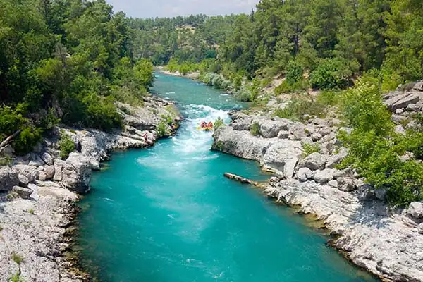
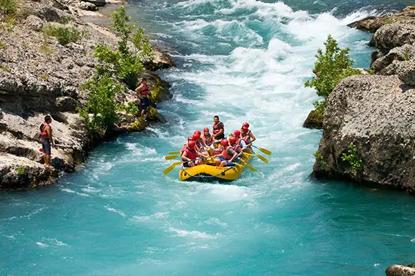
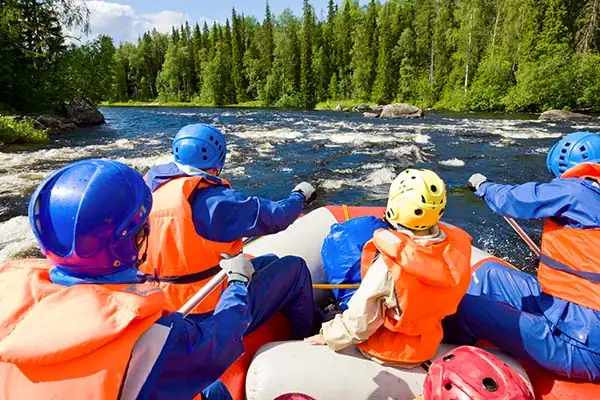
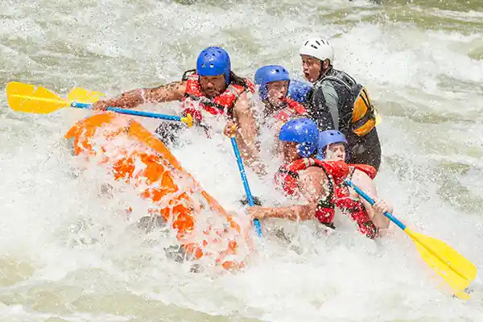
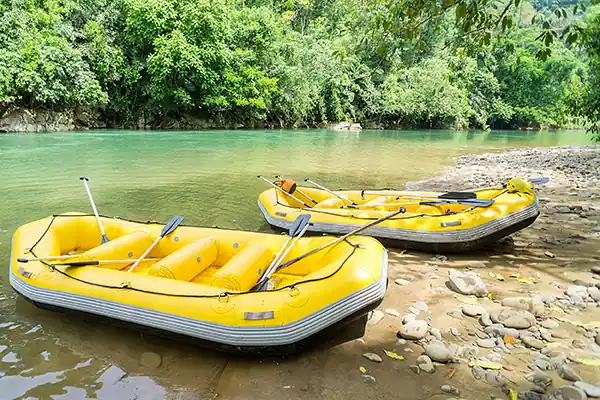
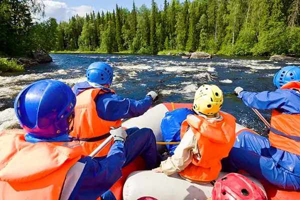
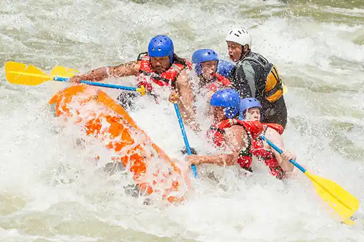
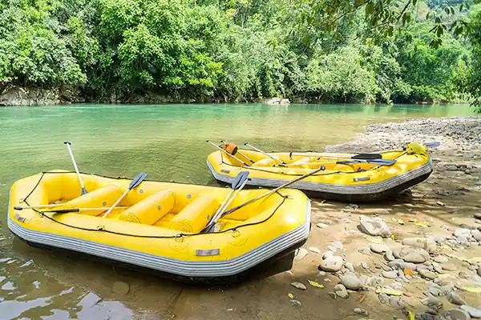

The purpose of Wish Washy Rafts is to provide a safe, family friendly, white water rafting experience. That is why our company motto is "Fun for All." Groups with small children under the age of 10 will recieve complimentary tickets to our lazy river, so everyone can enjoy the thrill of floating down the water.
Wishy Washy Rafts
History
Wishy Washy Rafts originated from a small town pastime after locals finished wahing their clothes. They would gather all the washing barrels, tie them together and ride down the rapids with their laundry. As time past, these rapids became quite the attraction as people gathered to watch the Washing barrel races. Now, we no longer using washing barrels, but we have kept the name Wishy Washy Rafts.
Adventure Awaits You!
 




